Introducción a Python¶
Por qué Python?¶
Python es un lenguaje de programación orientado a objetos que fue creado por Guido van Rossum a principios de los años 90 y que ha tenido un gran crecimiento en los últimos 10 años, debido principalmente a su adopción por parte de Google.
También está siendo adoptado por gran cantidad de científicos de distintas disciplinas (astrónomos, biólogos, físicos y científicos sociales) como una alternativa gratuita a Matlab basada en software libre. En gran parte esto se debe a que Python es muy fácil de aprender pues posee una sintaxis muy sencilla. Además, tiene excelente documentación de soporte, librerías científicas de primera calidad, capacidades de graficación en dos y tres dimensiones, y un enorme repertorio de librerías libres para realizar prácticamente cualquier tarea imaginable (creación de sitios web, interacción con bases de datos, creación de interfaces gráficas multi-plataforma, etc, etc).
En este curso vamos a utilizar Python(x,y), un programa que no sólo permite instalar fácilmente Python, sino que también viene con todas las librerías necesarias para llevar a cabo un buen curso de modelación y simulación.
Arrancar Python(x,y) y Spyder¶
Después de haber instalado Python(x,y) podemos observar se crea un ícono en el escritorio para acceder a él. Al darle doble click, vemos que se abre una ventana, en la que oprimimos el botón que aparece justo debajo de Spyder.
Spyder es un Entorno de Desarrollo Integrado (o IDE por sus siglas en inglés) que ha sido creado para hacer más sencilla y agradable la programación de simulaciones científicas. Su diseño ha sido inspirado por Matlab pero se le han añadido características especiales para facilitar el desarrollo de programas en Python. Durante el curso vamos a utilizar Spyder para realizar nuestras simulaciones.
Al abrir Spyder vemos que está compuesto de cuatro paneles. En la mitad izquierda se encuentra el Editor, que es el lugar en el que vamos a escribir nuestro código. El editor además reporta errores de sintaxis y omisiones comunes, para que puedan ser corregidas por el programador antes de intentar correr su código.
Editor con varios archivos abiertos
La parte derecha está dividida en dos secciones, cada una de las cuales contiene varios paneles organizados en pestañas. En la parte de abajo se encuentra la Consola (Console), que sirve para correr el código que se haya escrito en el editor. Su comportamiento es similar al de la terminal de comandos de Windows (cmd.exe). Además, permite interactuar con las variables del programa y correr directamente código de Python o porciones de código que se encuentren en el Editor.
Consola
A su lado se encuentra el Historial de Comandos (History Log), que guarda la historia de todos los comandos introducidos en la Consola.
Por otro lado, en la parte superior está el Inspector de Objetos (Object Inspector) que se usa para obtener ayuda instantánea sobre la función o el comando de Python que se quiera utilizar. Este panel se actualiza automáticamente al escribir un paréntesis después del nombre de un comando, por lo que es bastante útil.
Inspector de Objetos
A su lado se encuentra el Explorador de Variables (Variable Explorer) que permita revisar, editar y graficar las variables de los programas que se hayan corrido en la consola.
Explorador de Variables
Mi primer programa en Python¶
El primer programa que todos realizamos es el “Hola Mundo”. En Python este programa es extremadamente sencillo, pues sólo consiste en una línea:
print "Hola, mundo!"
Para correr este programa, lo copiamos en el Editor, guardamos el archivo con el nombre que queramos y después oprimimos selecciones Run del menú Run o simplemente oprimimos F5.
La ventaja de print es que puede imprimir distintos tipos de datos, tan sólo con separarlos con una coma. Por ejemplo, también es válido escribir:
print "El resultado de K es", 7+8
Tipos de datos en Python¶
Como la mayoría de lenguajes de programación, Python maneja varios tipos de datos. Los más importantes son:
Números enteros y flotantes¶
Con los números uno puede realizar los siguientes tipos de operaciones:
Operación Resultado + Suma - Resta * Multiplicación / División
Advertencia
Al dividir dos números enteros, Python realiza por defecto la división entera de ellos, tal como lo hacen C o C++. Es decir que el resultado de, por ejemplo:
1/2
no es, como uno esperaría, 0.5, sino 0.
Para evitar esto, lo que usualmente se hace es convertir los números a flotantes añadiéndoles un punto al final, de la siguiente forma:
1./2.
Python brinda una alternativa más sencilla para poder olvidarse de si los números con los que estamos trabajando son enteros o flotantes. Para ello debe introducirse la siguiente instrucción en la primera línea del archivo en el que estemos programando:
from __future__ import division
- Ejercicios
Realizar las siguientes operaciones
Calcular
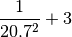
Calcular
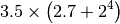
Cuántos milímetros hay en la distancia de la Tierra a la Luna, que es de 380.000 kilómetros?
Cuántos segundos hay en un siglo?
Cuál es el número más grande que puede calcularse con tres dígitos, los paréntesis y los operadores +, -, *, / y **? (Tomado de Introducción a Mathematica del Prof. Jurgen Tischer)
Nota
Para interrumpir un cálculo en la consola debe oprimirse el botón Kill. Después de hacerlo debe oprimirse el botón Run para reiniciarla.
Listas¶
Las listas son arreglos de datos. Se definen con corchetes, y pueden contener datos de distintos tipos (números enteros y flotantes o también los tipos que veremos más abajo). Un ejemplo de una lista en Python es:
In [1]: li = [-5, 7, 4, 9, 1, 12, 2]
La operación más importante que se hace con las listas es la extracción de sus elementos en distintas posiciones. Es muy importante tener en cuenta que las listas en Python siempre empiezan con el índice 0, como los arreglos de C y C++.
In [2]: li[0]
Out[2]: -5
In [3]: li[3]
Out[3]: 9
Lo bueno de las listas en Python es que si usamos un índice más grande que n-1, donde n es el número de elementos, Python nos da un error (en lugar de darnos basura de la memoria)
In [4]: li[20]
---------------------------------------------------------------------------
IndexError Traceback (most recent call last)
/home/carlos/Trabajo/Ecci/Modelacion y Simulacion/Notas de Clase/Notas/<ipython-input-4-0a252909fc48> in <module>()
----> 1 li[20]
IndexError: list index out of range
Las listas son objetos mutables, es decir, sus elementos pueden modificarse de acuerdo a la siguiente sintaxis:
In [5]: li[1] = 0
In [6]: li
Out[6]: [-5, 0, 4, 9, 1, 12, 2]
El manejo de listas en Python es muy elegante gracias a varias facilidades. En primer lugar pueden usarse índices negativos para extraer elementos del final de la lista hacia adelante, de esta forma:
In [7]: li[-1]
Out[7]: 2
In [8]: li[-3]
Out[8]: 1
Además pueden seleccionarse fácilmente subconjuntos de una lista usando lo que se conoce como rebanado (o slicing en inglés), que consiste en usar dos índices separados por : al momento de tomar elementos de la lista. Al hacerlo, Python toma los elementos que van desde el primer índice hasta uno menos del último. Miremos un par de ejemplos:
In [9]: li[1:3]
Out[9]: [0, 4]
In [10]: li[2:6]
Out[10]: [4, 9, 1, 12]
El rebanado también funciona si se usa un sólo índice, bien sea el superior o el inferior, siempre que vaya acompañado de los :. En estos casos se obtiene el resultado que uno esperaría, es decir, que se tome desde el índice que uno quiera hasta el final:
In [11]: li[2:]
Out[11]: [4, 9, 1, 12, 2]
o que se pare en un índice menos que el que se use como último:
In [12]: li[:-3]
Out[12]: [-5, 0, 4, 9]
Finalmente, pueden usarse las operaciones aritméticas + para concatenar dos listas, y * para repetir varias veces los elementos de una lista, así:
In [13]: [0, 4, 7] + [2, 3]
Out[13]: [0, 4, 7, 2, 3]
In [14]: [0, 1] * 4
Out[14]: [0, 1, 0, 1, 0, 1, 0, 1]
- Ejercicios:
Calcular el promedio de la siguiente lista:
li = [3, 18, 11, 4, 14, 12, 2, 19, 4, 6, 17, 7, 14, 6, 8, 17, 7, 2, 6,\ 19, 10, 10, 9, 17, 5, 15, 3, 14, 20, 12, 20, 7, 15, 2, 17, 1, 6, 17, 2,\ 1, 12, 11, 62, 14, 9, 20, 3, 19, 4, 15]
Sugerencia: Usar el comando sum para obtener la suma de los elementos de la lista, y el comando len para obtener cuantos elementos tiene.
Calcular la mediana de la lista anterior. Recordar que para calcular la mediana hay que organizar los datos de menor a mayor y después utilizar la fórmula:
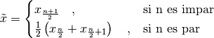
donde n es el número de elementos de la lista.
Sugerencia: Usar el comando sorted para organizar los elementos de la lista de menor a mayor.
La media móvil es un concepto usado en economía para tratar de observar si existe una tendencia al alza o a la baja en los precios de las acciones de una empresa. Para ello, lo que hace es crear una serie de promedios de distintos subconjuntos del conjunto de datos original.
Por ejemplo, si en siete días las acciones de una empresa tuvieron los siguientes precios:
Precios: 11, 12, 13, 14, 15, 16, 17
Podemos calcular la media móvil, en periodos de cinco días, de la siguiente forma:
Primera media móvil de 5 días: (11 + 12 + 13 + 14 + 15) / 5 = 13
Segunda media móvil de 5 días: (12 + 13 + 14 + 15 + 16) / 5 = 14
Tercera media móvil de 5 días: (13 + 14 + 15 + 16 + 17) / 5 = 15
Con esta descripción, encontrar las primeras 12 medias móviles, en periodos de 10 días, para los siguientes precios de las acciones de Intel registrados entre el 24 de Marzo y el 5 de Mayo de 2010:
Intel = [22.27, 22.19, 22.08, 22.17, 22.18, 22.13, 22.23, 22.43, 22.24,\ 22.29, 22.15, 22.39, 22.38, 22.61, 23.36, 24.05, 23.75, 23.83, 23.95,\ 23.63, 23.82, 23.87, 23.65, 23.19, 23.10, 23.33, 22.68, 23.10, 22.40,\ 22.17]
Las acciones de Intel están a la alza o a la baja en este periodo?
Sugerencia Utilizar las operaciones de rebanado descritas arriba.
Strings o cadenas¶
En Python las cadenas son definidas como listas de caracteres, por lo que es posible aplicarles rebanado y las demás operaciones que vimos en la sección anterior. Una cadena se puede formar usando comillas dobles o sencillas, de la siguiente manera:
In [15]: fruta = "banano"
In [16]: dulce = 'bocadillo'
En este caso, los operadores + y * dan los siguientes resultados:
Operación Uso Resultado + cadena + cadena Une dos cadenas * cadena * número Repite una cadena tantas veces como sea el número
Con las dos variables arriba definidas podemos realizar, por ejemplo, las siguientes operaciones:
In [17]: fruta + dulce
Out[17]: 'bananobocadillo'
In [18]: fruta * 3
Out[18]: 'bananobananobanano'
In [19]: dulce[0]
Out[19]: 'b'
In [20]: dulce[:7]
Out[20]: 'bocadil'
Sin embargo, las cadenas no pueden ser modificadas, es decir, no les puede asignar nuevos elementos como a las listas y por tanto son inmutables. Esto lo podemos constatar a continuación:
In [21]: fruta[2] = 'z'
---------------------------------------------------------------------------
TypeError Traceback (most recent call last)
/home/carlos/Trabajo/Ecci/Modelacion y Simulacion/Notas de Clase/Notas/<ipython-input-21-e128f67047a6> in <module>()
----> 1 fruta[2] = 'z'
TypeError: 'str' object does not support item assignment
Las cadenas tienen varios métodos que pueden ser de gran utilidad. A ellos se puede acceder colocando un punto después del nombre de la variable a la que se le haya asignado una cadena. Por ejemplo, si después de fruta colocamos un punto, veremos que aparece:
In [22]: fruta.
fruta.__add__ fruta.__mod__ fruta.decode fruta.partition
fruta.__class__ fruta.__mul__ fruta.encode fruta.replace
fruta.__contains__ fruta.__ne__ fruta.endswith fruta.rfind
fruta.__delattr__ fruta.__new__ fruta.expandtabs fruta.rindex
fruta.__doc__ fruta.__reduce__ fruta.find fruta.rjust
fruta.__eq__ fruta.__reduce_ex__ fruta.format fruta.rpartition
fruta.__format__ fruta.__repr__ fruta.index fruta.rsplit
fruta.__ge__ fruta.__rmod__ fruta.isalnum fruta.rstrip
fruta.__getattribute__ fruta.__rmul__ fruta.isalpha fruta.split
fruta.__getitem__ fruta.__setattr__ fruta.isdigit fruta.splitlines
fruta.__getnewargs__ fruta.__sizeof__ fruta.islower fruta.startswith
fruta.__getslice__ fruta.__str__ fruta.isspace fruta.strip
fruta.__gt__ fruta.__subclasshook__ fruta.istitle fruta.swapcase
fruta.__hash__ fruta._formatter_field_name_split fruta.isupper fruta.title
fruta.__init__ fruta._formatter_parser fruta.join fruta.translate
fruta.__le__ fruta.capitalize fruta.ljust fruta.upper
fruta.__len__ fruta.center fruta.lower fruta.zfill
fruta.__lt__ fruta.count fruta.lstrip
Advertencia
Los métodos que empiezan con dos guiones abajo (__) son métodos internos de la clase, es decir que no han sido diseñados para ser usados directamente por el programador, y por tanto no hay que tenerlos en cuenta.
Entre estos métodos, vamos a mirar que comportamiento tienen los siguientes:
upper: Convierte toda la cadena en mayúsculas
In [23]: fruta.upper() Out[23]: 'BANANO'
count: Cuenta cuantas veces se repite un carácter en una cadena
In [24]: fruta.count('a') Out[24]: 2
replace: Reemplaza un carácter o parte de una cadena por otro carácter o cadena
In [25]: fruta.replace('a', 'o') Out[25]: 'bonono' In [26]: fruta.replace('ban', 'en') Out[26]: 'enano'
split: Divide una cadena según los espacios que tenga y genera una lista de palabras.
In [27]: s = "Hola, mundo!" In [28]: s.split() Out[28]: ['Hola,', 'mundo!']
También puede dividir una cadena por un determinado carácter para partirla en varias subcadenas:
In [29]: dulce.split('d') Out[29]: ['boca', 'illo']
- Ejercicios
Tomar la variable dulce, hacer que se repita 50 veces, y separar las palabras con un espacio, de tal forma que obtengamos algo como:
'bocadillo bocadillo ...'
Cuántas veces se repite la palabra banano en la siguiente cadena?:
muchas_frutas = 'bananobananobananobananobananobananobananobananobanano\ bananobananobananobananobananobananobananobananobananobananobananobanano\ bananobananobananobananobananobananobananobananobananobananobananobanano\ bananobananobananobananobananobananobananobananobananobananobananobanano\ bananobananobananobananobananobananobananobananobananobananobananobanano\ bananobananobananobananobananobananobananobananobananobananobananobanano\ bananobananobananobananobananobananobananobananobananobananobananobanano\ bananobananobananobananobananobananobananobananobananobananobananobanano\ bananobananobananobananobananobananobananobananobananobananobananobanano\ bananobananobananobananobananobananobananobananobananobananobananobanano\ bananobananobananobananobananobananobananobananobananobananobananobanano\ bananobananobananobananobananobananobananobananobananobananobananobanano\ bananobananobananobananobananobananobananobananobananobananobananobanano\ bananobananobananobananobananobananobananobananobananobananobananobanano\ bananobananobananobananobananobananobananobananobananobananobananobanano\ bananobananobananobananobananobananobananobananobananobananobananobanano\ bananobananobananobananobananobananobananobananobananobananobananobanano\ bananobananobananobananobananobananobananobananobananobananobananobanano\ bananobananobananobananobananobananobananobananobananobananobananobanano\ bananobananobananobananobananobananobananobananobananobananobananobanano\ bananobanano'
Sugerencia: Usar el comando len para contar los elementos de una lista.
Para la cadena anterior, separar cada palabra con dos espacios y un guión en la mitad y reemplazar la b por una B y la o por una O, de tal forma que obtengamos algo como:
'BananO - BananO - ...'
Qué produce el método center?
Experimentar con los siguientes comandos para ver que produce:
In [30]: dulce.center(2) In [31]: dulce.center(10) In [32]: dulce.center(16) In [33]: dulce.center(30)
Tuplas¶
Una tupla es un arreglo inmutable de distintos tipos de datos. Es decir, es como si fuera una lista y tiene sus mismas propiedades, pero al igual que las cadenas, no es posible modificar ninguno de sus valores.
Las tuplas se definen con paréntesis ( ) en lugar de corchetes. Un ejemplo de tupla sería:
In [34]: tp = (1,2,3,4,'a')
In [35]: tp[3]
Out[35]: 4
In [36]: tp[-1]
Out[36]: 'a'
In [37]: tp[2:]
Out[37]: (3, 4, 'a')
Pero no podemos modificar sus valores mediante nuevas asignaciones:
In [38]: tp[2] = 'b'
---------------------------------------------------------------------------
TypeError Traceback (most recent call last)
/home/carlos/Trabajo/Ecci/Modelacion y Simulacion/Notas de Clase/Notas/<ipython-input-38-3688dc6b8d2c> in <module>()
----> 1 tp[2] = 'b'
TypeError: 'tuple' object does not support item assignment
Nota
Es posible omitir los paréntesis al momento de definir una tupla si así se desea, lo cual es una práctica bastante extendida entre los programadores de Python. Por ejemplo, una asignación válida es:
In [39]: tp1 = 'a', 'b', 2
In [40]: tp1
Out[40]: ('a', 'b', 2)
Diccionarios¶
Los diccionarios son una estructura de datos muy usada en Python. Ya hemos visto que los elementos de listas, cadenas y tuplas están indexados por números, es decir, li[0], fruta[1] o tp[2]. En su lugar, los diccionarios están indexados por claves (o keys en inglés), que pueden ser no sólo números, sino también cadenas, tuplas o cualquier otro tipo de datos que sea inmutable.
Lo interesante de los diccionarios es que nos sirven para relacionar dos tipos distintos de datos: las claves con sus valores (o values en inglés), que pueden ser mutables o inmutables.
Por ejemplo, supongamos que queremos guardar las contraseñas que varias personas están utilizando para entrar a un servicio web. Esto lo podemos hacer muy fácilmente con un diccionario, en el que las claves sean el nombre de cada persona y sus valores sean las contraseñas que estén usando.
Para ello, en Python podemos escribir algo como:
In [41]: codigos = {'Luis': 2257, 'Juan': 9739, 'Carlos': 5591}
Como podemos ver, los diccionarios se definen con llaves ({ }). Las claves son los elementos que están a la izquierda de los :, mientras que los que están a la derecha son los valores.
Como ya se mencionó, para extraer un elemento del diccionario es necesario usar alguna de sus claves. En nuestro caso, las claves son los nombres de las personas. Por ejemplo, para extraer el código que le corresponde a Carlos debemos escribir:
In [42]: codigos['Carlos']
Out[42]: 5591
o para el de Juan
In [43]: codigos['Juan']
Out[43]: 9739
Si alguien cambia de contraseña, podemos actualizar nuestro diccionario fácilmente haciendo una nueva asignación, por ejemplo:
In [44]: codigos['Luis'] = 1627
In [45]: codigos
Out[45]: {'Carlos': 5591, 'Juan': 9739, 'Luis': 1627}
Nota
Los diccionarios no tienen un orden interno por defecto. En el último ejemplo podemos ver como 'Luis' aparece al final del diccionario, mientras que en la primera definición de códigos aparecía al principio. No hay que preocuparse por ello.
O si una persona se retira del servicio, podemos eliminarla del diccionario usando el comando del, así
In [46]: del codigos['Juan']
In [47]: codigos
Out[47]: {'Carlos': 5591, 'Luis': 1627}
Si queremos introducir el nombre y la contraseña de una nueva persona, sólo es necesario usar una nueva clave y asignarle un valor, así
In [48]: codigos['Jorge'] = 6621
In [49]: codigos
Out[49]: {'Carlos': 5591, 'Jorge': 6621, 'Luis': 1627}
Para saber si una persona ya está en el diccionario o no, usamos el siguiente método:
In [50]: codigos.has_key('Carlos')
Out[50]: True
In [51]: codigos.has_key('José')
Out[51]: False
Finalmente, para extraer todas las claves y los valores de un diccionario podemos usar los siguientes métodos:
In [52]: codigos.keys()
Out[52]: ['Luis', 'Jorge', 'Carlos']
In [53]: codigos.values()
Out[53]: [1627, 6621, 5591]
Conversión entre tipos de datos¶
Para convertir entre unos y otros tipos de datos, en Python se usan los siguientes comandos:
int: Da la parte entera de un número flotante, y también covierte cadenas que sean enteros.
In [54]: int(3.99) Out[54]: 3 In [55]: int('6') Out[55]: 6
float: Convierte enteros y cadenas a números flotantes.
In [56]: float(12) Out[56]: 12.0 In [57]: float('4.23') Out[57]: 4.23
str: Convierte números y cualquier otro objeto a una cadena.
In [58]: str(36.1) Out[58]: '36.1' In [59]: str([1,2,3]) Out[59]: '[1, 2, 3]'
list: Convierte tuplas, diccionarios y cadenas a una lista.
In [60]: list((3, 2, 4)) Out[60]: [3, 2, 4] In [61]: list('1457') Out[61]: ['1', '4', '5', '7']
Para los diccionarios, list sólo extrae las claves y no los valores
In [62]: list({'a': 12, 'b': 5}) Out[62]: ['a', 'b']
dict: Convierte una lista de listas, donde cada una tiene dos elementos, a un diccionario.
In [63]: dict([[10, 'a'], [15, 't']]) Out[63]: {10: 'a', 15: 't'}
Funciones¶
Como en cualquier otro lenguaje, en Python también es posible definir funciones, es decir, secuencias de enunciados que reciben ciertos datos, ejecutan algunas operaciones sobre ellos y devuelven un resultado.
Para definir una función se usa la palabra clave def, y el valor que va a retornar siempre debe ser precedido por un return. La sintaxis de una función es como se ve a continuación:
def NOMBRE(LISTA DE ARGUMENTOS):
ENUNCIADOS
return VALOR
La línea que contiene el return es opcional, pues no todas las funciones deben retornar algo. Por ejemplo, hay algunas que sólo modifican los valores de ciertas variables, mientras que otras sólo imprimen un valor con print
Advertencia
Es muy importante tener en cuenta que los enunciados que hacen parte de la función deben estar cuatro espacios por dentro del encabezado. En otras palabras, todo lo que esté indentado con cuatro espacios por dentro de la definición, pertenece al cuerpo de la función, ya que en Python la indentación es lo único que define la forma en que se agrupa el código. Sólo cuando el nivel de indentación se retorne al punto en que se escribió el primer def se considera que ha terminado la definición de la función.
Un ejemplo muy sencillo de una función que toma un argumento x y retorna este argumento elevado al cuadrado es:
def cuadrado(x):
return x**2
Podemos comprobar que la función esta operando correctamente al pasarle varios argumentos y ver los resultados que retorna:
In [64]: cuadrado(3)
Out[64]: 9
In [65]: cuadrado(5)
Out[65]: 25
In [66]: cuadrado(10)
Out[66]: 100
In [67]: cuadrado('a')
---------------------------------------------------------------------------
TypeError Traceback (most recent call last)
/home/carlos/Trabajo/Ecci/Modelacion y Simulacion/Notas de Clase/Notas/<ipython-input-67-d15440223ddf> in <module>()
----> 1 cuadrado('a')
/home/carlos/Trabajo/Ecci/Modelacion y Simulacion/Notas de Clase/Notas/<ipython-input-64-ca512653e72d> in cuadrado(x)
1 def cuadrado(x):
----> 2 return x**2
TypeError: unsupported operand type(s) for ** or pow(): 'str' and 'int'
En el último caso vemos que si intentamos pasarle a la función un argumento que no puede ser procesado, Python simplemente retorna un error.
- Ejercicios
Definir una función potencia que tome dos argumentos x,y y devuelva
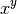
Definir una función imprimir_doble que tome un argumento x y lo imprima dos veces, con un espacio entre el una palabra y la siguiente. Por ejemplo, al evaluarla debe retornar:
In [68]: imprimir_doble(5) 5 5 In [69]: imprimir_doble('hola') hola hola In [70]: imprimir_doble([3,9,4]) [3, 9, 4] [3, 9, 4]
Definir una función distancia que tome dos argumentos x,y, que sean listas de dos elementos, y calcule la distancia entre ellos usando el teorema de Pitágoras:
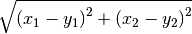
Pueden comprobar que la función está haciendo su trabajo correctamente si retorna estos valores:
In [71]: distancia([0,0], [1,1]) Out[71]: 1.4142135623730951 In [72]: distancia([1,5], [2,2]) Out[72]: 3.1622776601683795
Definir una función digitos que tome un numero x y retorne los dígitos de que se compone como números enteros. Por ejemplo, digitos debe retornar:
In [73]: digitos(1234) Out[73]: [1, 2, 3, 4] In [74]: digitos(99861) Out[74]: [9, 9, 8, 6, 1]
Sugerencia: Utilizar los comandos de conversión entre tipos y el comando map para aplicar una función a todos los elementos de una lista. Por ejemplo, podemos usar map con cuadrado de la siguiente forma:
In [75]: map(cuadrado, [2, 3, 4, 5]) Out[75]: [4, 9, 16, 25]
Estructuras de Control¶
A continuación vamos a describir las estructuras de control más importantes en Python:
El condicional (if)¶
Es quizá la estructura de control más utilizada. A continuación presentamos un sencillo ejemplo para observar como es su sintaxis en Python:
def mayor_o_menor(x, y):
if x < y:
print x, "es menor que", y
elif x > y:
print x, "es mayor que", y
else:
print x, "y", y, "son iguales"
Al aplicar esta función a distintos números obtenemos:
In [76]: mayor_o_menor(2, 5)
2 es menor que 5
In [77]: mayor_o_menor(100, 10)
100 es mayor que 10
In [78]: mayor_o_menor(1, 1)
1 y 1 son iguales
Algunos de los operadores con los que se pueden hacer comparaciones al momento de usar en if son:
Operador Resultado == Igualdad != No es igual < Menor que > Mayor que <= Menor o igual >= Mayor o igual not Niega una condición in Se usa para verificar si un elemento está en una lista
A excepción de in y not, todos los demás operadores son similares a los usados en otros lenguajes de programación, por lo que no vamos a mirar ejemplos de ellos. Veamos, por tanto, sólo como funcionan los primeros:
In [79]: 3 in [1, 2, 4]
Out[79]: False
In [80]: 3 in [1, 2, 3]
Out[80]: True
In [81]: not 2 == 5
Out[81]: True
A través de estos ejemplos también podemos notar que los valores de verdad en Python se escriben como True y False para verdadero y falso, respectivamente.
- Ejercicios
Definir una función absoluto(x) que tome un número entero y retorne su valor absoluto, así:
In [82]: absoluto(6) Out[82]: 6 In [83]: absoluto(100.22) Out[83]: 100.22 In [84]: absoluto(-18.7) Out[84]: 18.7
Definir una función es_divisible_entre_siete(x) que imprima si un número es o no es divisible entre 7. La función debe retornar resultados como los siguientes:
In [85]: es_divisible_entre_siete(12) 12 no es divisible entre 7 In [86]: es_divisible_entre_siete(14) 14 es divisible entre 7 In [87]: es_divisible_entre_siete(32) 32 no es divisible entre 7 In [88]: es_divisible_entre_siete(21) 21 es divisible entre 7
Sugerencia: Utilizar el operador módulo (%) para decidir si un número es múltiplo de otro. Este operador retorna el resto de la división entre dos números. Por tanto, si un número divide exactamente a otro, retorna 0, sino retorna cualquier otro número. Veamos algunos ejemplos:
In [89]: 12%4 Out[89]: 0 In [90]: 12%6 Out[90]: 0 In [91]: 12%5 Out[91]: 2 In [92]: 25%5 Out[92]: 0 In [93]: 25%6 Out[93]: 1
Generalizar la función anterior en una función llamada es_divisible_entre_n(x, n) que tome dos números enteros e imprima si el primero es divisible entre el segundo, así: (Tomado de Aprenda a pensar como un programador con Python)
In [94]: es_divisible_entre_n(20, 4) 20 es divisible entre 4 In [95]: es_divisible_entre_n(36, 5) 36 no es divisible entre 5
Definir una función agregar_nuevo(li, x) que reciba una lista y un elemento y retorne una nueva lista en la que esté añadido el elemento, pero sólo si éste no hace parte de la lista original (Tomado de Introducción a Mathematica del Prof. Jurgen Tischer).
Por ejemplo:
In [96]: agregar_nuevo([3,9,6], 11) Out[96]: [3, 9, 6, 11] In [97]: agregar_nuevo([3,9,6], 9) Out[97]: [3, 9, 6]
El ciclo for¶
En Python for se utiliza para moverse o iterar entre un conjunto de valores. Su sintaxis es más sencilla que la usada en C o C++, porque en lugar de utilizar un contador cuyo valor va aumentando o disminuyendo durante el ciclo, se toma una secuencia completa (una lista, una tupla, o una cadena), y se recorren sus elementos en el orden en que aparecen en ella.
Observemos algunos ejemplos:
In [98]: for x in [3, 9, 12, 4]:
....: print x
....:
3
9
12
4
In [99]: prefijos = "JKLMNOPQ"
In [100]: sufijos = "ack"
In [101]: for letra in prefijos:
.....: print letra + sufijos
.....:
Jack
Kack
Lack
Mack
Nack
Oack
Pack
Qack
In [102]: for i in range(10):
.....: print i**2
.....:
0
1
4
9
16
25
36
49
64
81
range es un comando que muy a menudo se utiliza junto a los ciclos for, pues sirve para generar una lista con todos los números desde 0 hasta n-1, donde n es el valor que recibe. También puede usarse con dos valores, uno como límite inferior y el otro como límite superior, así:
In [103]: range(1, 20)
Out[103]: [1, 2, 3, 4, 5, 6, 7, 8, 9, 10, 11, 12, 13, 14, 15, 16, 17, 18, 19]
In [104]: range(7, 25)
Out[104]: [7, 8, 9, 10, 11, 12, 13, 14, 15, 16, 17, 18, 19, 20, 21, 22, 23, 24]
- Ejercicios:
Construir un ciclo for que imprima todos los números pares de 1 a 100.
Sugerencia: Utilizar el operador módulo (%) y un if.
Definir una función es_primo(x) que tome un número x y verifique si es divisible entre todos los números menores a x. Si lo es, entonces debe retornar False y si no True. Por ejemplo:
In [105]: es_primo(10) Out[105]: False In [106]: es_primo(17) Out[106]: True In [107]: es_primo(15) Out[107]: False In [108]: es_primo(23) Out[108]: True
Sugerencia: Modificar la función es_divisible_entre_n para que en lugar de imprimir oraciones, retorne True o False.
Optimizar la función anterior, respondiendo a la siguiente pregunta: ¿Es necesario revisar todos los números menores a x para verificar si es divisible entre todos ellos? ¿Hasta qué número es en realidad necesario revisar?
Para ello, definir una nueva función es_primo_veloz(x) y comparar los tiempos de ejecución entre ella y es_primo usando el comando %timeit en la consola, así:
In [109]: %timeit es_primo(600) 100000 loops, best of 3: 5.37 us per loop In [110]: %timeit es_primo_veloz(600) 100000 loops, best of 3: 2.65 us per loop
Definir una función rango_intercuartil(li) que calcule el rango intercuartil de una lista. Recordar que éste se define como:
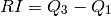
donde 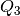 es la mediana de los datos mayores a la mediana y 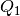 es la mediana de los datos menores a la mediana.
Por ejemplo, para la siguiente lista:
li = [48.38, 27.6 , 32.46, 51.94, 47.43, 48.61, 34.38, 48.98,\ 48.86, 41.45, 56.55, 25.46, 27.03, 36.72, 48.03, 36.86,\ 42.58, 44.44, 56.12, 43.86, 44.42, 42.92, 41.43, 22.81,\ 36.55, 50.89, 29.93, 47.61, 63.91, 53.98, 42.64, 27.18,\ 29.93, 31.51]
el rango intercuartil es:
In [111]: rango_intercuartil(li) Out[111]: 16.15
Sugerencias:
Definir primero una función mediana(li) que calcule la mediana de una lista, de la misma forma en que se hizo en el ejercicio de la sección de Listas. La mediana de la lista anterior, por ejemplo, es:
In [112]: mediana(li) Out[112]: 42.78
Dividir la lista original en dos listas li1 y li2 que contengan los elementos menores y mayores a la mediana, respectivamente, y calcularles a éstas nuevamente la mediana para obtener y .
Para ello, definir li1 = [] y li2 = [] para que empiecen siendo listas vacías y utilizar el método append de cada una para añadirles los elementos correspondientes.
Definir una función desv_est(li) que calcule la desviación estándar de una lista, usando la fórmula:
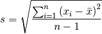
donde 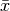 es el promedio y
 es el número total de
datos.
es el número total de
datos.Por ejemplo, la desviación estándar de la lista del ejemplo anterior es:
In [113]: desv_est(li) Out[113]: 10.193054313544058
El ciclo while¶
Finalmente vamos a mirar la sintaxis del comando while, que si bien no es tan usado como los dos anteriores, es muy útil porque permite recorrer los elementos de una lista, tupla o cadena por medio de su índice. Esto es algo que no puede hacerse con mucha naturalidad con for, que está ideado para recorrer los elementos directamente, sin tener que preocuparse por sus posiciones.
Además, con while no es necesario definir un límite superior para realizar un ciclo, como si hay que hacerlo con for.
Miremos un par de ejemplos:
En este primer ejemplo, imprimimos la lista de todos los elementos de li, pero seleccionándolos de li por medio de su índice.
In [114]: li = [3, 6, 9, 11] In [115]: i = 0 In [116]: while i < 4: .....: print li[i] .....: i += 1 .....: 3 6 9 11
En la última línea pueden verse un ejemplo de asignación abreviada, pues en lugar de escribir i = i+1, escribimos i += 1, lo cual es similar a como se hace en C o C++. Otras abreviaciones que funcionan en Python son: -=, *=, /=, y %=.
En este ejemplo vamos a imprimir los 20 primeros números que son divisibles entre 4:
In [117]: i = 0 In [118]: j = 1 In [119]: while i <= 20: .....: if es_divisible_entre_n(j, 4): .....: print j .....: i += 1 .....: j += 1 .....: 4 8 12 16 20 24 28 32 36 40 44 48 52 56 60 64 68 72 76 80 84
En este caso vemos cómo usar dos contadores en el ciclo, uno (i) para poder detenerlo cuando se haya obtenido el veinteavo número divisible entre 4, y otro (j) para movernos entre los números mayores a 1 y revisar cuáles de ellos son divisibles entre 4.
- Ejercicios:
Definir una función cuenta_atras(n) que tome un número entero n e imprima todos los números desde n hasta 1 usando un ciclo while. Además, después de imprimir 1, debe imprimir Este es el fin!.
Dada la siguiente cadena:
s = "jhkdaskduwqludhlasdklashdihlasdhljakhuekysbvjkasdhlasdkhlashkdedlahskdlkbasmndkm"
Imprimir en qué posiciones se encuentra la letra k.
R/:
2, 6, 19, 35, 39, 45, 54, 60, 68, 71, 78
Utilizar la función es_primo_veloz para definir una función lista_de_primos(n) que genere la lista de los n primeros números primos. Para que puedan comparar, a continuación aparece la lista de los 20 primeros números primos:
In [120]: lista_de_primos(20) Out[120]: [2, 3, 5, 7, 11, 13, 17, 19, 23, 29, 31, 37, 41, 43, 47, 53, 59, 61, 67, 71]
Sugerencia: Definir una lista vacía y utilizar su método append para añadirle los números primos que vayamos encontrando.
Usar la función digitos, para encontrar el primer número de 4 cifras que sea divisible entre 8 y cuya primera y última cifras sean iguales.
R/:
2032Sugerencia: Definir dos contadores: uno que empiece en 1000 para ir revisando todos los números de 4 cifras, y otro para detener el ciclo while tan pronto se encuentre el primer número que cumpla la condición deseada.
Clases¶
Python es un muy buen lenguaje orientado a objetos (como Java) en el que es muy sencillo definir y trabajar con clases. En las secciones anteriores hemos tenido la oportunidad de utilizar los métodos de cadenas y listas para resolver varios ejercicios, lo que indica que en su implementación ambos tipos son clases, cosa que también cierta para los demás (aún los números son clases!).
En esta sección veremos como definir nuestras propias clases y como asociarle sus correspondientes atributos y métodos.
Definición e inicialización¶
En general, una clase es un objeto en el que se reúnen varias funciones (llamadas métodos) y variables (llamadas atributos) definidas por conveniencia por el usuario para resolver un problema en particular, organizar su código o reutilizarlo más adelante.
En Python las clases se definen con la palabra class y se inicializan usando el método __init__, que es una función cuyo primer argumento siempre debe ser la palabra self. Los argumentos que vengan después de self van a usarse para darle valores iniciales a los atributos de la clase. Miremos como se hace con un ejemplo:
class NumeroComplejo:
def __init__(self, r, i):
self.real = r
self.img = i
Vamos a usar esta clase para representar números complejos, por lo que debe tener dos atributos: una parte real y una parte imaginaria. En este caso, éstos están dados por real e img, respectivamente.
Nota
Es muy importante notar que para diferenciar los atributos de una clase de las variables locales, en Python todo atributo debe ir precedido de self., como en self.real y self.img.
Además de self, podemos ver que __init__ recibe los argumentos r e i, que se utilizan para inicializar los atributos mencionados.
Para crear una instancia de la clase es necesario llamarla por su nombre, con el número de argumentos declarados en __init__ (sin contar self) y asignársela a una variable, así:
In [121]: z = NumeroComplejo(1,2)
Para comprobar que la inicialización ha funcionado correctamente, podemos inspeccionar los atributos de la clase directamente:
In [122]: z.real
Out[122]: 1
In [123]: z.img
Out[123]: 2
De esta forma puede certificarse que, efectivamente, z es un número complejo con parte real 1 y parte imaginaria 2.
Una vez definida una instancia, también es posible modificar sus atributos por medio de asignación, así:
In [124]: z.real = 5
In [125]: z.real
Out[125]: 5
Métodos¶
Los métodos son funciones asociadas a una clase que operan sobre sus atributos. Por ejemplo, a la clase anterior le podemos añadir un método que calcule el módulo de un número complejo con la fórmula:
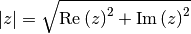
Para ello redefinimos NumeroComplejo para agregarle un nuevo método modulo, así:
class NumeroComplejo:
def __init__(self, r, i):
self.real = r
self.img = i
def modulo(self):
return (self.real**2 + self.img**2)**(1/2)
Nota
Al igual que para __init__, el primer argumento de todo método debe ser self, para que indicar que hace parte de la clase.
Con ello obtenemos el siguiente resultado para el módulo del número complejo que habíamos definido arriba:
In [126]: z.modulo()
Out[126]: 2.23606797749979
Aquí puede parecer un poco extraño que modulo se llame sin argumentos, cuando al definirlo en la clase se le había pasado a self como primer argumento. Esto se debe a que self no es un argumento en sí, sino que sólo se usa para señalar que una función es un método de la clase, como ya se mencionó.
Otra operación que puede hacerse con números complejos es obtener su
conjugado. El conjugado de un complejo  , es un nuevo número complejo
que se denota 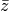 y se define como
, es un nuevo número complejo
que se denota 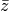 y se define como
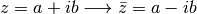
Para obtener el conjugado podemos entonces agregar un nuevo método a nuestra clase, de la siguiente forma:
class NumeroComplejo:
def __init__(self, r, i):
self.real = r
self.img = i
def modulo(self):
return (self.real**2 + self.img**2)**(0.5)
def conjugado(self):
return NumeroComplejo(self.real, -self.img)
Para calcular el conjugado de z sólo debemos llamar el método:
In [127]: z1 = z.conjugado()
In [128]: z1.real
Out[128]: 1
In [129]: z1.img
Out[129]: -2
Finalmente, vamos a añadir una función que retorne el producto de dos números complejos. Dados dos números
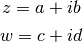
su producto está dado por:
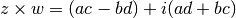
Para ello podemos escribir el siguiente método, llamado producto, en nuestra clase:
class NumeroComplejo:
def __init__(self, r, i):
self.real = r
self.img = i
def modulo(self):
return (self.real**2 + self.img**2)**(0.5)
def conjugado(self):
return NumeroComplejo(self.real, -self.img)
def producto(self, w):
r = self.real * w.real - self.img * w.img
i = self.real * w.img + self.img * w.real
return NumeroComplejo(r, i)
In [130]: w = NumeroComplejo(4,-7)
In [131]: x = z.producto(w)
In [132]: x.real
Out[132]: 18
In [133]: x.img
Out[133]: 1
Para comprobar que producto está funcionando correctamente podemos usar la siguiente fórmula, que relaciona el módulo de un número complejo con su conjugado:
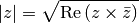
In [134]: z2 = z.producto(z.conjugado())
In [135]: (z2.real)**(1/2) == z.modulo()
Out[135]: True
- Ejercicios
Definir una clase Vector3D para representar vectores en 3 dimensiones, con las siguientes características:
Tres atributos: x, y, y z, usados para guardar sus coordenadas.
Un método llamado punto que calcule el producto punto entre dos vectores, mediante la fórmula:
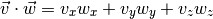
Por ejemplo, para los dos vectores definidos a continuación:
In [136]: v = Vector3D(2,0,1) In [137]: w = Vector3D(1,-1,3)
Su producto punto es:
In [138]: v.punto(w) Out[138]: 5
Un método llamado cruz que calcule el producto cruz entre dos vectores mediante la fórmula:
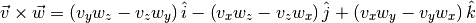
Por ejemplo, para los vectores definidos arriba el producto 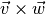 es igual a:
In [139]: u1 = v.cruz(w) In [140]: u1.x, u1.y, u1.z Out[140]: (1, -5, -2)
Mientras que 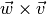 es:
In [141]: u2 = w.cruz(v) In [142]: u2.x, u2.y, u2.z Out[142]: (-1, 5, 2)
Redefinir la clase anterior para que en lugar de los atributos, x, y, y z, tenga uno sólo llamado coord, que sea una lista de tres elementos. También redefinir los métodos según esto.
Sugerencia: En el método __init__ revisar que la lista que se va a guardar en coord tenga exactamente tres elementos. Si tiene más o menos, asignarle a coord una lista vacía.
Definir una clase Tiempo para representar una hora del día, que tenga las siguientes condiciones (Tomado de Aprenda a pensar como un programador con Python):
Tres atributos: h, m y s, para guardar las horas, minutos y segundos.
Un método llamado imprimir_tiempo que imprima el tiempo almacenado en una instancia, de la siguiente forma:
In [143]: t1 = Tiempo(16,7,1) In [144]: t1.imprimir_tiempo() 16:07:01 In [145]: t2 = Tiempo(2,6,32) In [146]: t2.imprimir_tiempo() 02:06:32
Un método sumar que sume dos tiempos diferentes.
Sugerencias:
Sumar cada atributo por separado, es decir, segundo con segundos, minutos con minutos y horas con horas.
Para obtener el resultado de los segundos y los minutos, la suma debe realizarse módulo 60. Por ejemplo, si un Tiempo tiene 50 segundos y otra 15, su suma no debe darnos 65 sino 5, lo que se obtiene como:
(50 + 15)%60 = 5
Para las horas, tomar la suma módulo 24.
Verificar si la suma de los segundos, sin tomar el módulo, es mayor o igual a 60, y si lo es, incrementar en 1 el valor de los minutos. Tener en cuenta lo mismo para la suma de los minutos y el valor de las horas.
Un ejemplo de este método es:
In [147]: t1 = Tiempo(23,50,45) In [148]: t2 = Tiempo(3,40,40) In [149]: t3 = t1.sumar(t2) In [150]: t3.imprimir_tiempo() 03:31:25
Importar librerías¶
Python posee un gran variedad de librerías para todo tipo de usos, desde la creación y apertura de archivos en cualquier sistema operativo hasta la extracción de datos en archivos de Word o Excel, pasando por el manejo y análisis de enormes cantidades de información provenientes de la bolsa de valores o de experimentos astronómicos, climáticos o biológicos.
La ventaja de Python sobre otros lenguajes de programación es que posee un avanzado mecanismo para importar librerías o comandos específicos de alguna de ellas, lo que hace muy sencillo usarlas para beneficio del programador. A continuación veremos las distintas formas en que puede hacerse esto.
La primera opción, y la más sencilla, es usar el comando import seguido del nombre la librería, así:
import math
Cuando queramos usar algún comando de la librería, debemos llamarla por su nombre seguido de .. Inmediatamente deberá aparecer una lista con las funciones que hace parte de la misma. así:
In [151]: math. math.__class__ math.__package__ math.asin math.e math.fsum math.modf math.__delattr__ math.__reduce__ math.asinh math.erf math.gamma math.pi math.__dict__ math.__reduce_ex__ math.atan math.erfc math.hypot math.pow math.__doc__ math.__repr__ math.atan2 math.exp math.isinf math.radians math.__format__ math.__setattr__ math.atanh math.expm1 math.isnan math.sin math.__getattribute__ math.__sizeof__ math.ceil math.fabs math.ldexp math.sinh math.__hash__ math.__str__ math.copysign math.factorial math.lgamma math.sqrt math.__init__ math.__subclasshook__ math.cos math.floor math.log math.tan math.__name__ math.acos math.cosh math.fmod math.log10 math.tanh math.__new__ math.acosh math.degrees math.frexp math.log1p math.trunc
Nota
De no aparecer esta lista, debe oprimirse TAB si se está en la consola o CTRL + Espacio si se está en el editor.
Como math es la librería de funciones matemáticas básicas de Python, podemos utilizarla para calcular el 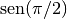, por ejemplo:
In [152]: math.sin(math.pi/2) Out[152]: 1.0
Otra opción es sólo llamar un comando específico de una librería determinada. Para ello usamos la siguiente sintaxis:
from math import sin
En este caso sólo se carga el comando sin, sin cargar el resto de la librería. Esto puede ser muy ventajoso cuando la librería es grande y sólo queremos utilizar una pequeña funcionalidad de la misma. Otra ventaja es que no es necesario usar el nombre de la librería antes del comando.
In [153]: sin(3.1) Out[153]: 0.04158066243329049
Sin embargo, si queremos utilizar pi, veremos un error en la consola, porque no ha sido cargado:
In [154]: sin(pi) --------------------------------------------------------------------------- NameError Traceback (most recent call last) /home/carlos/Trabajo/Ecci/Modelacion y Simulacion/Notas de Clase/Notas/<ipython-input-154-338a6e05f4c1> in <module>() ----> 1 sin(pi) NameError: name 'pi' is not defined
Para no tener que escribir una línea from math import ... por cada símbolo que se desee importar, se puede usar la misma sintaxis de arriba con cada símbolo separado por una coma:
from math import sin, pi
Al cargar pi de math de esta forma, ya no veremos el error anterior:
In [155]: sin(pi/2) Out[155]: 1.0
Para llamar todos los comandos de una librería sin que estén precedidos por su nombre, se utiliza la sintaxis:
from math import *
Sin embargo, esta opción no es muy recomendable ya que los comandos de varias librerías pueden tener el mismo nombre, lo que puede resultar en serias confusiones.
La última opción es renombrar la librería al momento de importarla. Esto es una práctica bastante común, pues permite utilizar nombres cortos para las librerías, lo que hace más fácil llamarlas con el .. Para ello se usa la siguiente sintaxis:
import math as mt
En lugar de math sólo usamos mt, así:
In [156]: mt.sin(mt.pi/2) Out[156]: 1.0